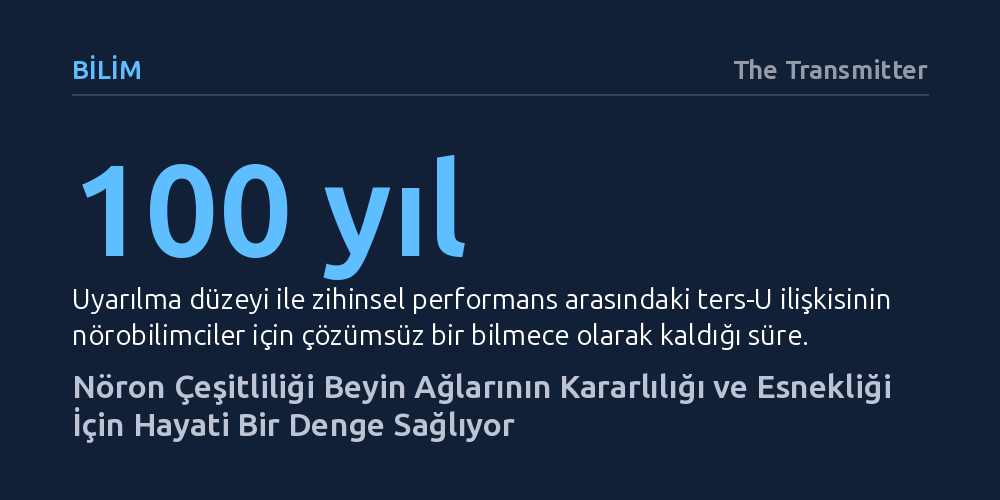

BILIM · The Transmitter · 2026-10-21
Hesaplamalı sinirbilim çalışmaları, nöronlar arasındaki elektriksel ve yapısal çeşitliliğin beynin öğrenme ve bellek esnekliğini artırdığını gösteriyor. Bu çeşitliliğin kaybolması aşırı senkronizasyon ve nöbetlere yol açarken, aşırısı ise ağları kaosa sürüklüyor.
Beyindeki nöron farklılıklarının rastgele bir kusur değil; zihinsel esneklik, bellek geçişleri ve aşırı senkronize nöbetleri önlemek için ayarlanmış temel bir hesaplama mekanizması olduğunu gösterir.

Geleneksel hesaplamalı sinirbilim modellerinde beyin incelenirken, araştırmacılar matematiksel hesaplamaları basitleştirmek adına genellikle nöronları birbirinin tıpatıp kopyası kabul eden standart şablonlar kullanır. Oysa gerçek biyolojik dokuda en dar tanımlanmış hücre grubunda dahi hiçbir nöron bir diğeriyle birebir aynı elektriksel ya da yapısal özellikleri taşımaz. Her bir hücrenin uyarılma eşiği, ateşleme hızı ve çevresine uzattığı bağlantı sayısı birbirinden belirgin biçimde farklıdır.
Son dönemde yayımlanan kuramsal ve deneysel çalışmalar, bu içsel çeşitliliğin biyolojik bir rastlantı ya da önemsiz bir gürültü olmadığını ortaya koyuyor. Aksine, hücreler arasındaki bu farklılıklar sinir ağlarının hem yeni bilgileri daha zengin biçimde kodlamasını sağlıyor hem de beynin değişen koşullara uyum sağlama yeteneğini güçlendiriyor. Matematiksel araçların gelişmesiyle birlikte araştırmacılar, çeşitliliğin beynin hesaplama kapasitesini nasıl dönüştürdüğünü artık doğrudan modellerine dahil edebiliyor.
Beyindeki bellek mekanizmalarını açıklamak için sıklıkla “çekici ağ” (attractor network) modellerine başvurulur. Bu ağların hesaplama ortamı, tepe ve vadilerle dolu engebeli bir araziye benzetilebilir. Bu arazide yer alan her bir vadi, ağda saklanan belirli bir anıyı ya da zihinsel temsili simgeler; girdi ortadan kalksa bile sistem o vadinin tabanında kalarak anıyı korur. Birbirinin kopyası nöronlardan oluşan homojen ağlarda bu vadiler oldukça derindir ve anılar sarsılmaz bir kararlılıkla muhafaza edilir.
Nöronların ateşleme eşiklerine çeşitlilik eklendiğinde ise bu manzara düzleşmeye başlar ve vadilerin derinliği azalır. Vadilerin sığlaşması ağın aynı anda tutabildiği toplam bağımsız anı sayısını bir miktar düşürse de sisteme kritik bir avantaj kazandırır: Ağ bir durumdan diğerine çok daha düşük bir girdiyle ve hızla geçebilir hale gelir. Bu esneklik, sonraki devrelerin bilgiyi çözmesini kolaylaştırırken ağın genel karar verme ve algılama performansını güçlendirir.
Canlıların görev performansı ile uyarılma düzeyi arasındaki ilişki psikolojide uzun süredir ters-U eğrisiyle tarif edilir: Çok gevşek veya aşırı uyarılmış olmak performansı düşürür, en yüksek başarı ise orta düzeyde yakalanır. Farelerin işitsel korteksindeki nöron hareketleri incelendiğinde, tonları ayırt etme başarısının uyarılma düzeyinin tam ortasında zirve yaptığı gözlendi. Ağ modellemeleri, bu durumun nöronal çeşitlilikle doğrudan bağlantılı olduğunu kanıtladı.
Çeşitliliğin yetersiz olduğu ağlar durumlar arasında geçiş yapamayacak kadar tutuk kalırken, çeşitliliğin aşırıya kaçması ağı tamamen öngörülemez bir kaosa sürüklüyor. Ancak dengeli bir çeşitlilik seviyesinde ağ temiz geçişler yaparak yüksek ve alçak frekansları kusursuzca ayırt edebiliyor. Beyindeki noradrenalin gibi nöromodülatör salgıları, bu çeşitlilik ayarını bir reosta gibi kısıp açarak beyni tam ihtiyaç duyulan hesaplama noktasına getiriyor.
Nöronlar arasındaki çeşitlilik sadece elektriksel eşiklerle sınırlı değil; hücrelerin kurduğu bağlantı sayısında da büyük farklılıklar görülüyor. Kimi 'popüler' nöronlar sayısız hücreyle iletişim halindeyken, daha münzevi hücreler sınırlı bağlantıyla yetiniyor. Bu yapısal çeşitlilik, gelen bir sinyalin ağ içinde farklı hız ve zaman ölçeklerinde yankılanmasını sağlıyor; kimi hücreler anlık tepki verirken kimileri bilgiyi zamana yayarak bütünleştiriyor.
Daha da önemlisi, çeşitliliğin tamamen yok olması beyin için ölümcül bir tehlike yaratabiliyor. İnsan dokuları üzerinde yapılan araştırmalar, piramidal nöronların ateşleme çeşitliliğini yitirmesinin kontrolsüz ve patolojik bir senkronizasyona, yani epilepsi nöbetlerine zemin hazırladığını gösteriyor. Araştırmacıların vurguladığı gibi “çeşitlilik bir hata değil, bir özellik olmalı” anlayışı, beynin hem yıkıcı senkron nöbetlerden korunmasının hem de biyolojik ritimler üretebilmesinin temel koşuludur.
Öte yandan beynin her bölgesi aynı düzeyde çeşitliliğe ihtiyaç duymuyor. Örneğin bir açma-kapama kapısı gibi görev yapan talamustaki hücreler oldukça homojen bir yapı sergilerken, korteks gibi karmaşık bilişsel süreçleri yürüten alanlar zengin bir heterojenliğe muhtaç. Bu durum, çeşitliliğin tek başına mutlak iyi ya da kötü olmadığını, beynin bölgesel hesaplama gereksinimlerine göre incelikle yapılandırıldığını ortaya koyuyor.